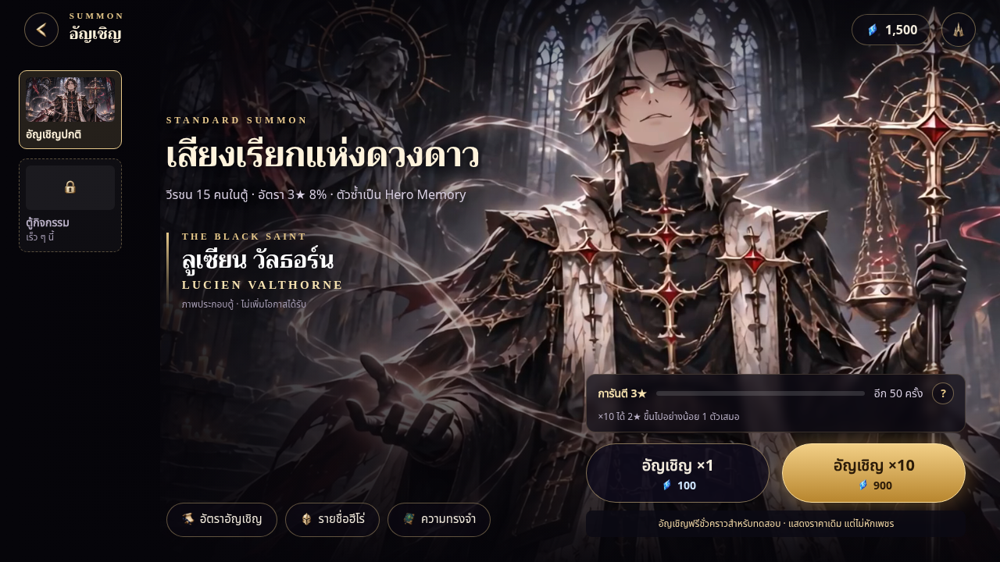
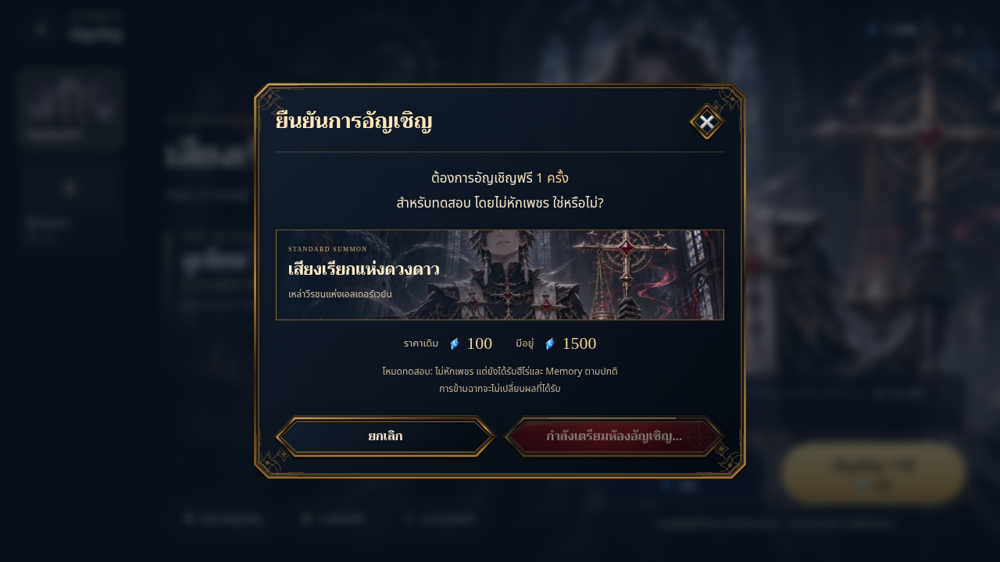
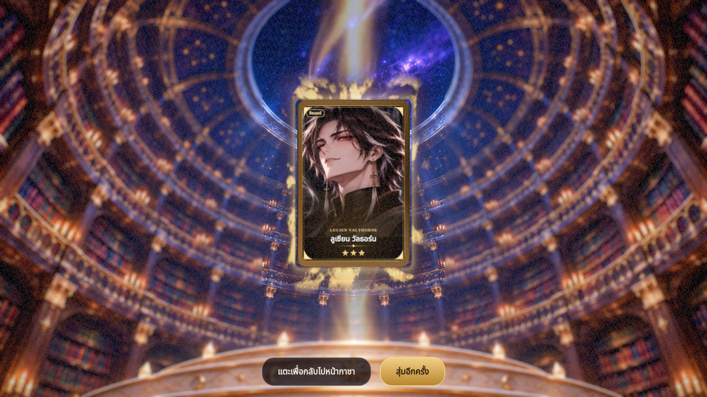

เข้าหน้า /gacha → โหลดภาพและเตรียมฉาก 3D → พักฉากไว้ → ยืนยันเมื่อพร้อม → เปิดห้องเดิม → แตะเพื่อซูมเข้าหนังสือ
การเตรียมห้องไม่สุ่มฮีโร่ ไม่ใช้เพชร และไม่เล่นฉากล่วงหน้า



ฉากและภาพพร้อมก่อนยืนยัน · ไม่มี request ภาพห้องเพิ่มตอนยืนยัน · ใช้ canvas ที่เตรียมไว้เดิม · ไม่วาดฉากวนขณะพัก · กลับแล้วเตรียมรอบใหม่ · ออกหน้าแล้วคืน GPU และไม่สร้างฉากค้างตามหลัง
TypeScript app/spec และ Karma 1,026 รายการผ่าน ดู รายงาน browser, กรณีกดก่อนพร้อม/ออกขณะโหลด และ รายละเอียด
ค่าความเร็วในรายงานมาจาก software WebGL ของเครื่องทดสอบ ซึ่งช้ากว่า GPU จริงมาก ใช้ยืนยันการย้ายงานโหลด/เตรียมฉากและการใช้ทรัพยากรซ้ำ ไม่ใช่คำรับรอง FPS หรือเวลาเปิดบนเครื่องผู้เล่น
ตามกฎใหม่ ทำ Desktop เป็นหลัก หลักฐานมือถือที่เก็บไว้ก่อนมีคำสั่งพัก Mobile เป็นประวัติเดิม ไม่ใช่งาน Mobile เพิ่มในรอบนี้